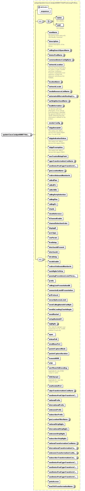

element
updateCiscoCatalyst6000T1VoIPGatewayPri
diagram

namespace
http://www.cisco.com/AXL/API/10.5
type
axlapi:UpdateCiscoCatalyst6000T1VoIPGatewayPriReq
properties
content
complex
children
name
uuid
newName
description
callingSearchSpaceName
devicePoolName
commonDeviceConfigName
networkLocation
locationName
networkLocale
mediaResourceListName
automatedAlternateRoutingCssName
aarNeighborhoodName
loadInformation
vendorConfig
mlppDomainId
mlppIndicationStatus
mlppPreemption
useTrustedRelayPoint
cgpnTransformationCssName
useDevicePoolCgpnTransformCss
geoLocationName
redirectInboundNumberIe
calledPlan
calledPri
callerIdDn
callingPartySelection
callingPlan
callingPri
chanIe
clockReference
dChannelEnable
channelSelectionOrder
displayIE
pcmType
csuParam
firstDelay
interfaceIdPresent
interfaceId
intraDelay
mcdnEnable
redirectOutboundNumberIe
numDigitsToStrip
passingPrecedenceLevelThrough
prefix
callingLinePresentationBit
connectedLineIdPresentation
priProtocol
securityAccessLevel
sendCallingNameInFacilityIe
sendExLeadingCharInDispIe
sendRestart
setupNonIsdnPi
sigDigits
span
statusPoll
smdiBasePort
packetCaptureMode
packetCaptureDuration
transmitUtf8
v150
asn1RoseOidEncoding
QSIGVariant
unattendedPort
cdpnTransformationCssName
useDevicePoolCdpnTransformCss
nationalPrefix
internationalPrefix
unknownPrefix
subscriberPrefix
geoLocationFilterName
nationalStripDigits
internationalStripDigits
unknownStripDigits
subscriberStripDigits
nationalTransformationCssName
internationalTransformationCssName
unknownTransformationCssName
subscriberTransformationCssName
useDevicePoolCgpnTransformCssNatl
useDevicePoolCgpnTransformCssIntl
useDevicePoolCgpnTransformCssUnkn
useDevicePoolCgpnTransformCssSubs
pstnAccess
imeE164TransformationName
attributes
Name
Type
Use
Default
Fixed
Annotation
sequence
xsd:unsignedLong
optional
source
<
xsd:element
name
=
"updateCiscoCatalyst6000T1VoIPGatewayPri
"
type
=
"axlapi:UpdateCiscoCatalyst6000T1VoIPGatewayPriReq
"/>
XML Schema documentation generated by
XMLSpy
Schema Editor
http://www.altova.com/xmlspy